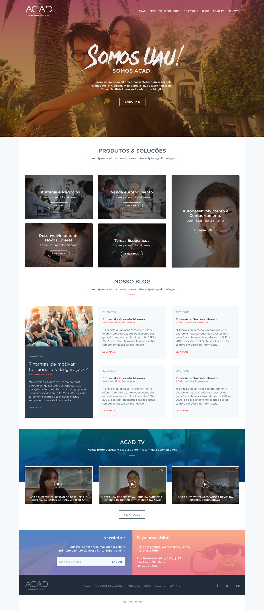
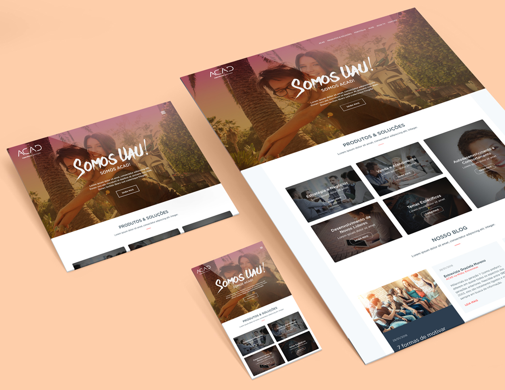
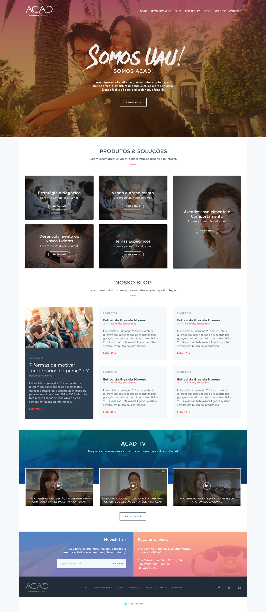
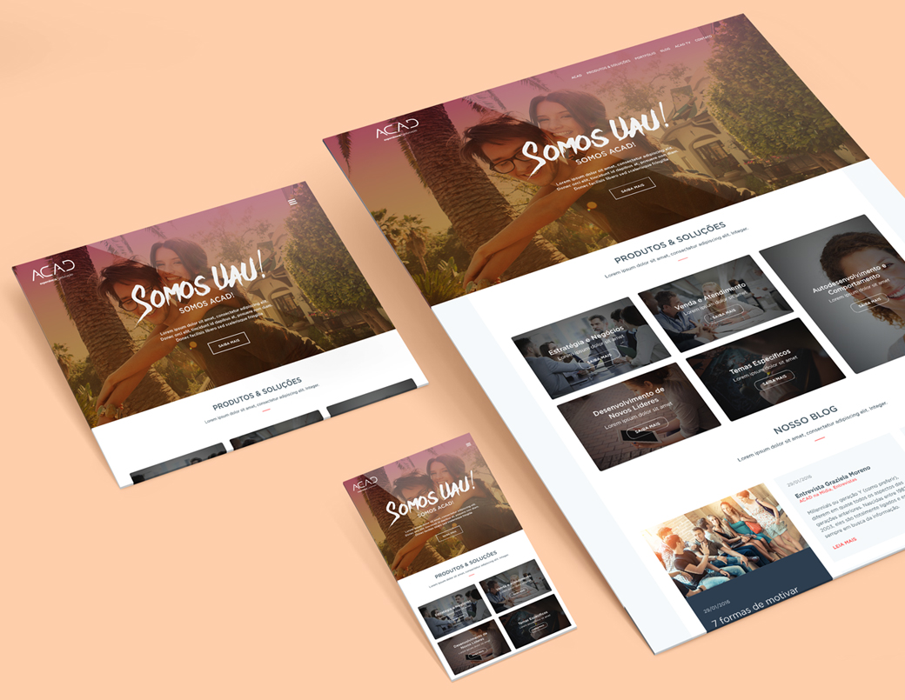
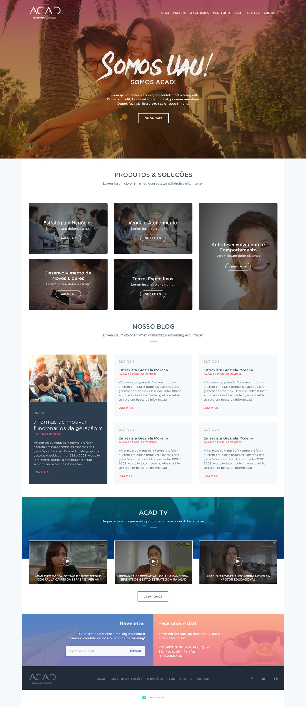
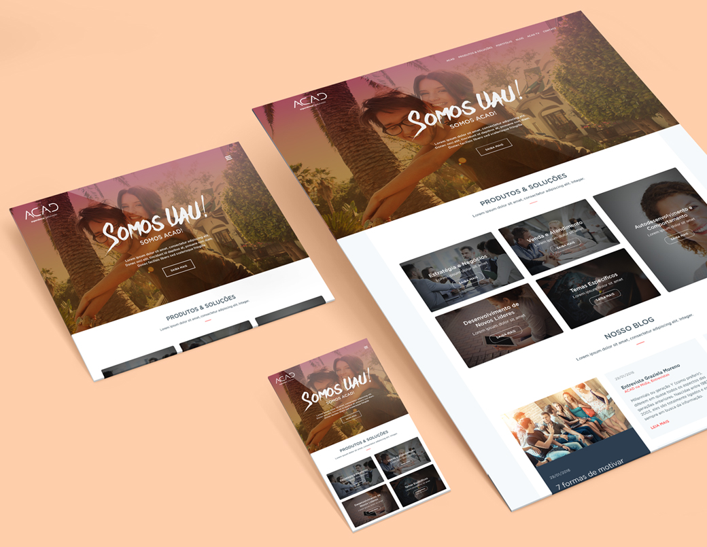

design
Academia da Estratégia, also known as ACAD, is a company specialized in education and learning in a corporate enviroment. They work with world-class clients and provide the most human and stimulating solutions, helping them to reach the top.
I was in charge of developing a whole new responsive website for the company, which could reposition them as content creators, bringing new users to the page and creating a whole new enviroment for them. This is a work in progress.

